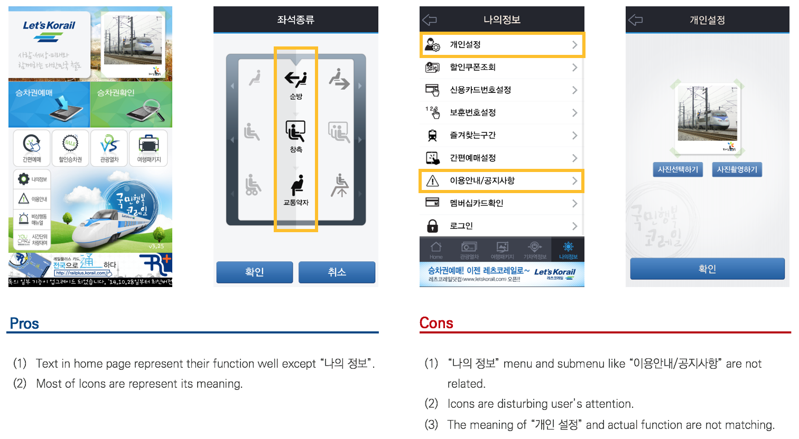
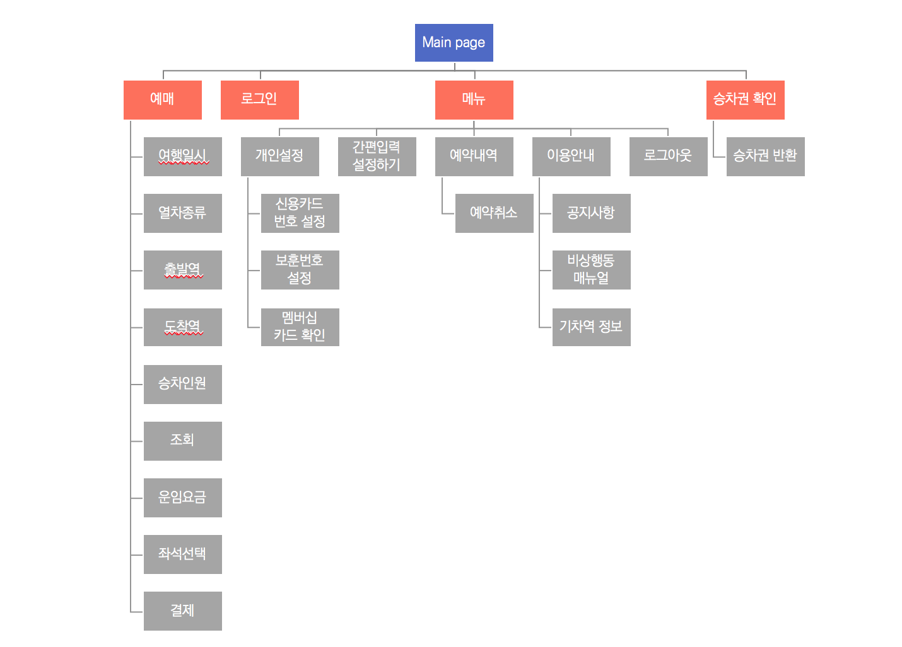
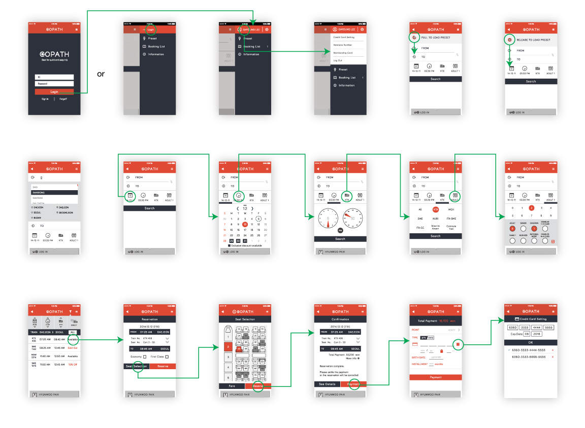
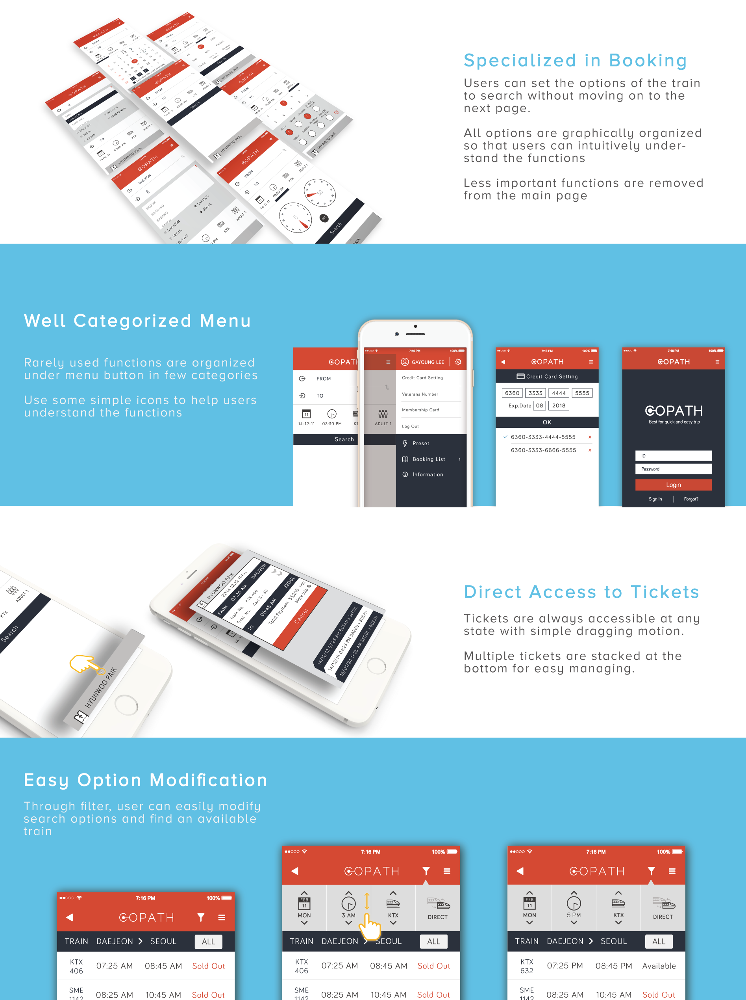

Copath
“Korean train booking application redesigned for easy navigation and facilitated booking process”
Group Project
Hyun Woo Paik
So Young Kim
Hyung Jong Kim
Ga Young Lee
My Role
User Research
UX/UI Design
Tools
Adobe CC
Rapid Prototying
Overview
As an app redesign project, my team and I decided to improve 'Korail Talk,' a smartphone application for train reservation service. It is operated by Korea Railroad Corporation, meaning it's the only application that let people enjoy train services via smartphone. Our goal was to make the complex application as simple as possible with only features that are used frequently by the users. We conducted field research, heuristic evaluation, user test and card sorting to come up with better and more intuitive design.
Problem
Even though the Korail talk is poorly designed, due to the fact that it is the only train application in Korea, the accumulated number of downloads is over 10 million. It clearly shows the necessity of redesiginig the application. How could we improve the application so that it's easy to use yet has key functions?
Field Research and Online Survey
We went to Daejeon train station (one of the biggest train stations in Korea) to conduct a simple survey to determine the most frequently used function on main page of the application. We picked out all of the options that are currently available in the first page and asked application users to pick 4 key functions for them. The top 4 functions were Booking, My Ticket, Quick Load, and My Information. We concluded that all other features were 'extra' and not necessary to include in the first page.
Problem
We conducted a heuristic evaluation to assess the overall pros and cons of current application. The criteria were visibility, intuitiveness, consistency, functionality, aesthetics, recoverability, and help. We individually evaulated the application based on these crietria and combined points that were brought up multiple times. We would be using this analysis as a foundation in redesigning process.
Then, we conducted a cognitive walkthrough to determine elements that were hindering users from achieving desired action. Based on our online survey, we selected 10 tasks that users mainly performed with the application. We subdivided each task into micro action steps to analyze pain points for completing each step and task.
Information Architecture

15 users performed open card sorting with 40 cards representing funtions and features. After summarization and analysis, we drew out the final information architecture.
Paper Prototype
Final Design
 We conducted a heuristic evaluation to assess the overall pros and cons of current application. The criteria were visibility, intuitiveness, consistency, functionality, aesthetics, recoverability, and help. We individually evaulated the application based on these crietria and combined points that were brought up multiple times. We would be using this analysis as a foundation in redesigning process.
Then, we conducted a cognitive walkthrough to determine elements that were hindering users from achieving desired action. Based on our online survey, we selected 10 tasks that users mainly performed with the application. We subdivided each task into micro action steps to analyze pain points for completing each step and task.
Reflection
I learned a lot about how users behave differently depending on the way information is given to them. Every information that the original application offered was important, but there were rather too much information to be digested in a small screen. Minimizing the steps to complete a task meant so much for the users, especially for the beginners. It would be really great if the Korea Railroad Corporation see our project to improve the general layout and a flow of the application. I would love to revisit the project test the final outcome to actual users.